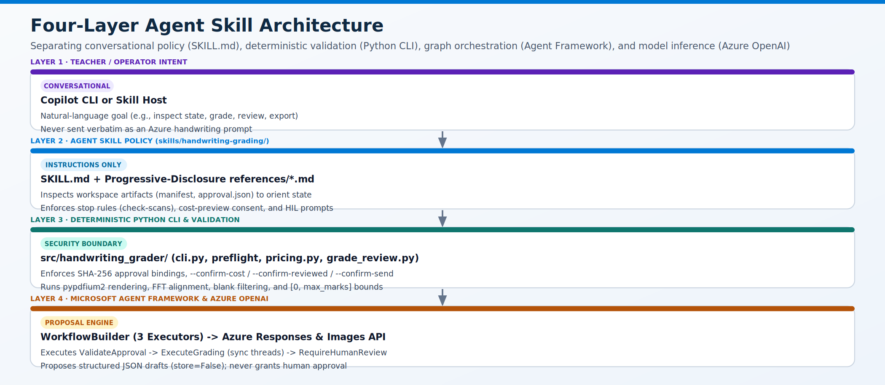
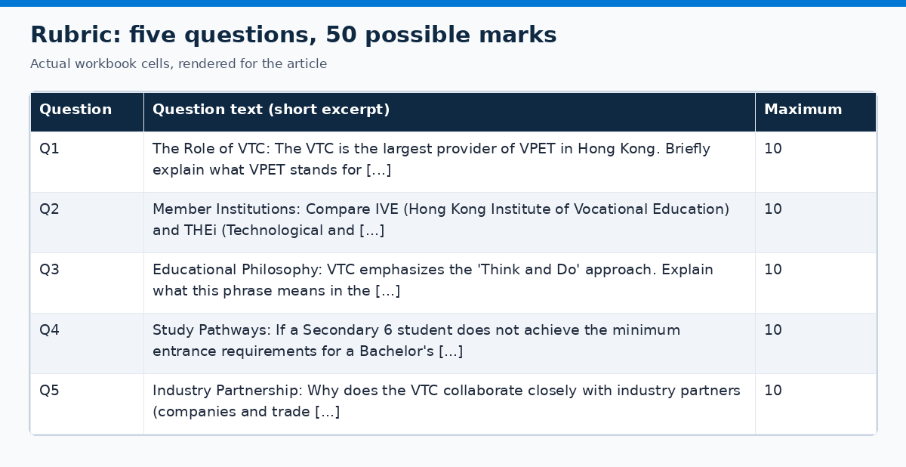

Designing an Agent Skill for Exam Grading: Architecture, Preflight, and Scan Consensus
Part 1 of 8 · MS MVP Technical Series · Agent Skills, Deterministic Preflight & Pipeline Design

When building AI workflows for real-world domains like education, the hardest engineering problem is rarely the model call itself. It is where the AI stops and deterministic software takes over.
In Azure Handwriting Grader Skills, we intentionally separated the system into four distinct layers: teacher intent in a coding assistant (such as GitHub Copilot CLI), reusable Agent Skill policy in skills/handwriting-grading/SKILL.md, a deterministic Python CLI, and Microsoft Agent Framework wrapping Azure OpenAI. Understanding why these layers are decoupled—and how the pipeline validates inputs before spending a single cloud token—is the foundation of the architecture.

Figure 1. Four-layer architecture separating conversational skill policy, deterministic Python validation, Agent Framework orchestration, and Azure OpenAI inference.
Why an Agent Skill instead of a giant system prompt?
An Agent Skill is a portable, progressive-disclosure instruction package—not executable Python and not a security boundary. Its YAML frontmatter tells the host assistant when the skill applies:
name: handwriting-grading
description: >-
Guides preparation and human review of scanned handwriting grading with
Azure OpenAI Handwriting Grader. Use for exam configuration, input validation,
rubric and bounding-box review, grading review, reports, or safe planning
of student-score distribution. Does not provide a general OCR service or
authorize automated grading or email.
Instead of stuffing 1,500 lines of CLI flags and edge-case rules into every chat turn, SKILL.md uses progressive disclosure:
1. Frontmatter: Lightweight trigger metadata loaded at startup.
2. State-oriented router: A table mapping workspace artifacts (exam.yaml, rubric/approval.json, regions/approval.json, grading/manifest.json) to the next valid action.
3. On-demand references/*.md: Deep guides (configuration.md, regions.md, grading.md, pricing.md, regrading.md, email.md) read only when the user reaches that stage.
This excerpt from SKILL.md defines how the assistant orients itself:
Establish whether the user is starting or resuming, what stage they need,
and which local paths they intend to use. Do not copy or overwrite data.
To register the skill in Copilot CLI, an operator adds the skills/ directory once (copilot skill add "/path/to/azure-handwriting-grader-skills/skills") and verifies with /skills list. Cloning the repository alone does not load skills/ automatically; the skill instructions also never replace Python's executable gates.
Stage 0 & 1: Answer sheets, path-jail preflight, and attendance
Before any scan is touched, the pipeline supports three deterministic preparation steps:
1. Optional printable answer sheets (answer-sheets)
When a teacher has a roster and a DOCX template before the exam, handwriting-grader answer-sheets --exam exam.yaml merges student metadata into personalized DOCX files (including Word text boxes and hyperlinks) and converts them via local LibreOffice into numbered PDFs and a combined.pdf for printing. It runs against the full roster—independent of attendance—and leaves pagination verification to the teacher.
2. Path-jail and structural preflight (preflight)
handwriting-grader preflight --exam example/example.yaml is strictly read-only and creates zero files. cli.check_exam() resolves every relative path from exam.yaml's parent directory (config_dir) rather than the shell's current working directory, then enforces:
- Path containment: output_dir must not contain any input file (preventing accidental self-overwrite or cleanup deletion).
- Roster integrity: Opens the Excel sheet with openpyxl, preserves leading zeroes on ID strings, and rejects missing/duplicate IDs or missing NAME/CLASS columns.
- Page-count parity: Reads the scanned PDF with pypdf and checks P = S × N:
if roster_count and pdf_count is not None and pages and pdf_count != roster_count * pages:
errors.append("PDF page count does not equal roster count times pages_per_student")
summary.update(exam=name, students=roster_count, absent=absent_count,
pdf_pages=pdf_count, pages_per_student=pages)
return errors, summary
Observed output on the cleared four-student, two-page-per-script VTC example:

Figure 2. Real read-only preflight output. Four students × two pages = eight pages passes structural math, yet cannot prove page orientation.
3. Explicit attendance (prepare-attendance -> approve-attendance)
Absences are never inferred from missing PDF pages or blank OCR. If attendance is configured, the teacher supplies an explicit ID,STATUS CSV (present/absent for every roster ID), reviews attendance/review.xlsx, and runs approve-attendance --confirm-reviewed to bind the present-student set with SHA-256 hashes.
Why check-scans runs before region setup (4x FFT consensus)
A passing preflight cannot tell if Script 1 was fed into the scanner upside-down. If you draw bounding boxes on an upside-down Script 1, every downstream crop for the entire class will be wrong.
handwriting-grader check-scans --exam example/example.yaml solves this offline at zero AI cost. It renders pages via pure-Python pypdfium2, downsamples them 4x, and runs FFT phase correlation across the cohort to build a majority-consensus reference for each page position (0..N-1). Comparing every page against both upright and rotated (90°, 180°, 270°) consensus templates catches upside-down, sideways, blank, or swapped pages—even if Script 1 itself is the culprit.

Figure 3. Actual check-scans blocker captured on example/example.yaml: PDF pages 1, 3, and 5 match template page 2.
Because check-scans returned a non-zero exit code, SKILL.md enforces an explicit stop rule: report the exact 1-based PDF page numbers and script numbers so the teacher fixes the physical PDF manually—never silently flip or reorder pages in code.

Figure 4. Actual page 1 rendered from example/VTC Test.pdf (150 DPI publication export) showing NAME, ID, CLASS, and Q1–Q3.
Rubric ingestion: deterministic XLSX vs. structured DOCX extraction
Before regions can be suggested or grading can run, the system needs an approved rubric (output/rubric/rubric.xlsx). SKILL.md routes by source format:
- Structured XLSX (import-rubric): Validates the Marking Scheme sheet locally (zero AI cost), rejecting formula cells, non-positive marks, and duplicate normalized question_key() IDs.
- Unstructured DOCX (extract-rubric --confirm-cost): Converts the DOCX to Markdown via mammoth and calls Azure OpenAI with a Pydantic ExtractedRubric schema and rubric.PROMPT:
Extract the marking scheme from the document. Return every gradable
question or sub-question as its own separate entry with its exact label,
question text/context, marking criteria, and individual available marks.
Whenever a numbered question contains separately marked sub-parts, sub-items,
or fill-in-the-blank items (each having its own answer space or mark allocation),
split each sub-part into its own entry using its combined label rather than
collapsing multiple sub-parts into one parent entry. Include any general grading
guidance separately. Do not invent missing information.
class RubricQuestion(BaseModel):
question_number: StrictStr
question_text: StrictStr
marking_scheme: StrictStr
marks: float
class ExtractedRubric(BaseModel):
general_grading_guide: StrictStr = ""
questions: list[RubricQuestion]
response = client.generate_content(
model=model,
contents=[PROMPT, content],
config=GenerationConfig(**rubric_config),
)
Python then rejects missing text, duplicate normalized IDs, metadata labels (NAME/ID/CLASS) used as questions, and non-finite marks, appending general_grading_guide to each question's criteria. Optionally, verify-rubric --confirm-cost uses Azure Responses web_search (deliberately uncached) to produce verification.xlsx and verification.docx with cited sources for human fact-checking. Neither extraction nor verification approves the rubric—that requires approve-rubric --confirm-reviewed.

Figure 5. Saved rubric workbook excerpt: five ten-mark questions totaling 50 marks.

Figure 6. Approved region coordinates overlaid on the 200-DPI template image (1654 × 2338 pixels). Part 4 covers region extraction and alignment in detail.
Next: Human-in-the-Loop by Design: Rubrics, Blind Score Review, and Cryptographic Approvals.
Implementation references: preflight and CLI and rubric extraction.